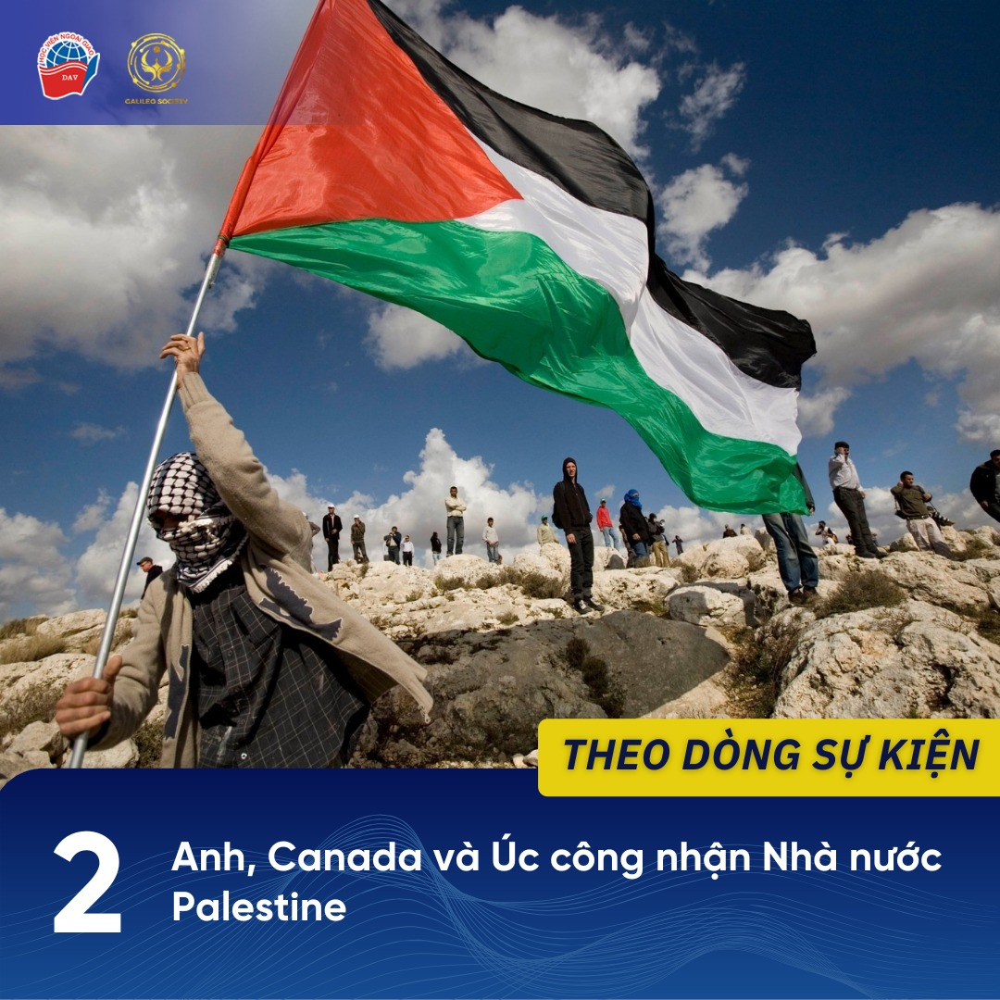
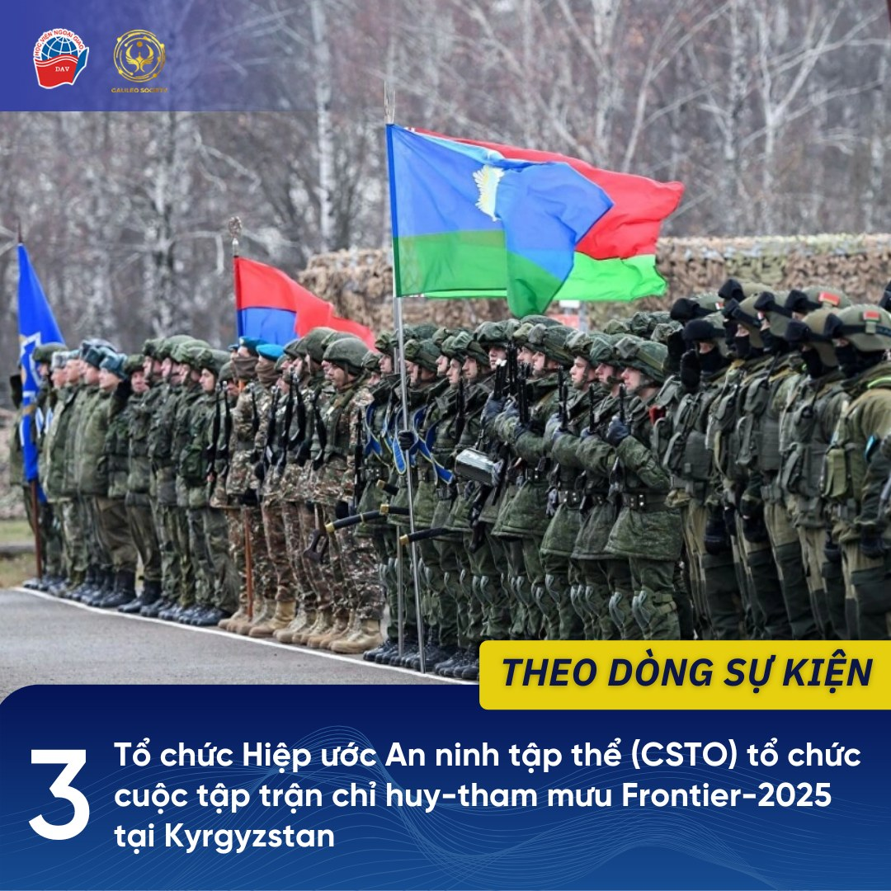
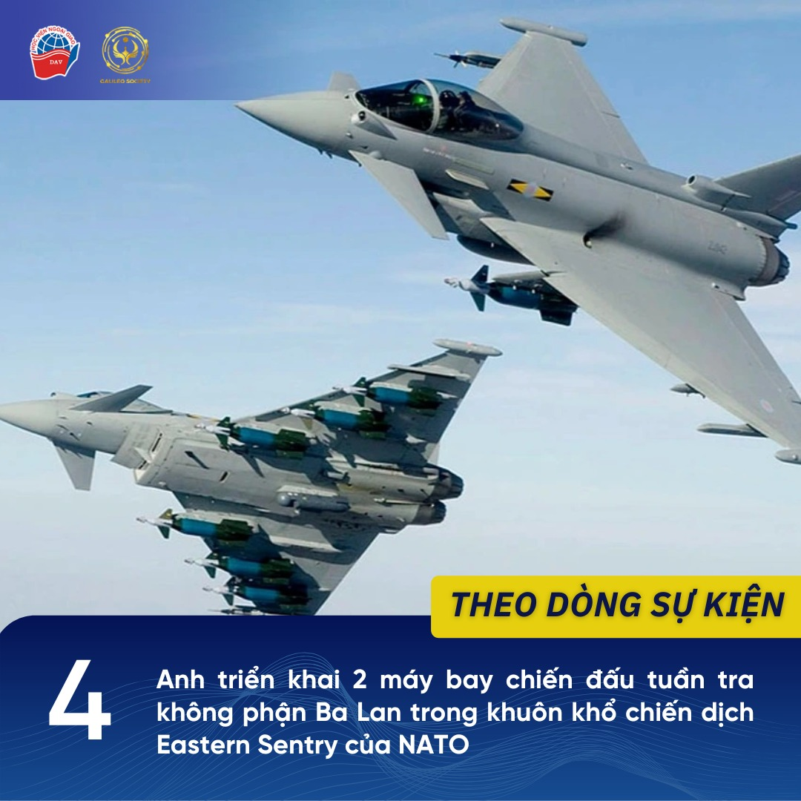
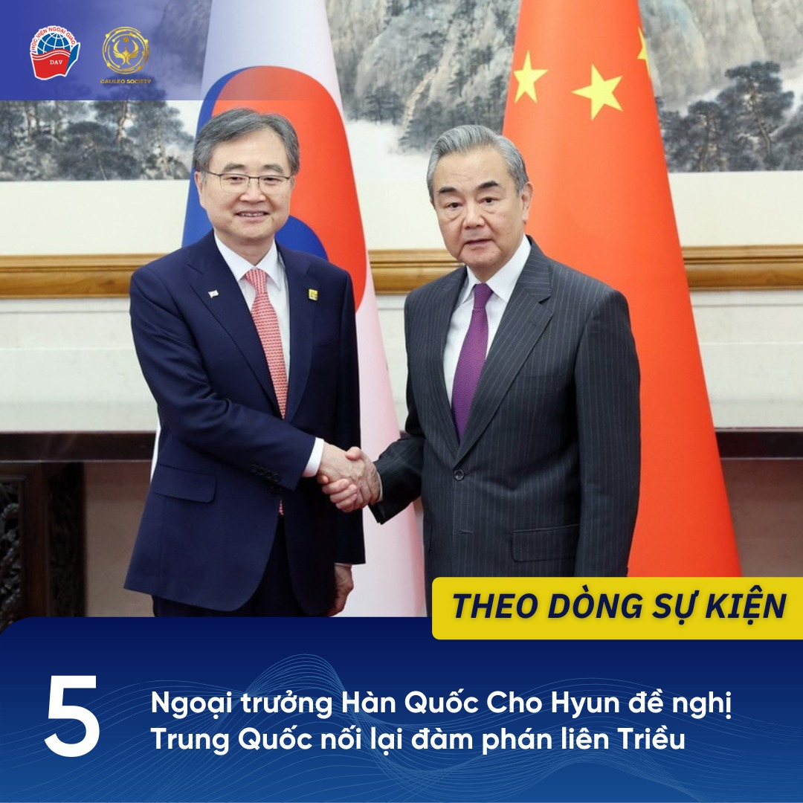

1 Diễn đàn Hương Sơn Bắc Kinh lần thứ 12 diễn ra tại Bắc Kinh
Diễn đàn Hương Sơn Bắc Kinh lần thứ 12 với chủ đề “Chung tay gìn giữ trật tự quốc tế và thúc đẩy phát triển hòa bình” diễn ra từ ngày 17 - 19/9 tại Bắc Kinh. Sự kiện thu hút hơn 1.800 đại biểu là lãnh đạo Bộ Quốc phòng, quân đội, chuyên gia và học giả đến từ hơn 100 quốc gia, vùng lãnh thổ và tổ chức quốc tế tham dự.
Diễn đàn bao gồm bốn phiên toàn thể và tám phiên họp đồng thời cùng nhiều hoạt động bên lề như các hội thảo chuyên đề, trưng bày kết quả nghiên cứu, tọa đàm giữa các chuyên gia quốc tế và đối thoại cấp cao. Các cuộc thảo luận tập trung xoay quanh các vấn đề then chốt như hòa bình, an ninh, kiểm soát công nghệ mới, giải pháp giải quyết xung đột và tăng cường hợp tác quốc phòng trong bối cảnh toàn cầu nhiều biến động.
Phát biểu tại diễn đàn, Thượng tướng Đổng Quân, Bộ trưởng Bộ Quốc phòng Trung Quốc đề xuất 4 định hướng lớn: duy trì giá trị lịch sử, cải cách quản trị toàn cầu trên cơ sở tôn trọng chủ quyền, bảo vệ hòa bình qua hợp tác đa phương, củng cố lòng tin bằng hành động thực chất. Về vấn đề Biển Đông, ông cho biết Trung Quốc đang phối hợp cùng các nước thúc đẩy Bộ Quy tắc ứng xử (COC) và triển khai hiệu quả Tuyên bố DOC.
Nguồn tham khảo:
1. “Beijing Xiangshan Forum concludes, championing int'l order, peaceful development”, Xinhua, ngày 19/09/2025, truy cập ngày 23/9/2025.
https://english.news.cn/.../2de26668782f4b778a8a31.../c.html
2. “General Phan Van Giang attends the 12th Beijing Xiangshan Forum”, Ministry of National Defense, ngày 19/09/2025, truy cập ngày 23/9/2025.
https://mod.gov.vn/.../general-phan-van-giang-attends-the...
3. “Bế mạc Diễn đàn Hương Sơn Bắc Kinh lần thứ 12”, Báo Quân đội nhân dân, ngày 19/09/2025, truy cập ngày 23/9/2025.
https://www.qdnd.vn/.../be-mac-dien-dan-huong-son-bac...
2 Anh, Canada và Úc công nhận Nhà nước Palestine
Ngày 21/9, Vương quốc Anh, Canada và Úc đã đồng loạt tuyên bố chính thức công nhận Nhà nước Palestine, đánh dấu một bước ngoặt quan trọng trong chính sách đối ngoại của các quốc gia phương Tây và tạo ra sức ép ngoại giao đáng kể lên Israel.
Cho đến nay đã có hơn 150 trong số 193 quốc gia thành viên Liên hợp quốc chính thức công nhận Nhà nước Palestine. Trong đó, riêng tại Hội nghị về giải pháp hai Nhà nước diễn ra ở New York ngày 22/9, thêm 6 quốc gia mới bao gồm Pháp, Andorra, Bỉ, Monaco, Luxembourg và Malta đã tuyên bố công nhận Nhà nước Palestine. Số lượng này dự kiến sẽ tiếp tục tăng trong thời gian tới.
Tổng thống Palestine Mahmud Abbas hoan nghênh động thái này, khẳng định đây là bước đi cần thiết hướng tới nền hòa bình bền vững trong khu vực, đồng thời cam kết sẽ tổ chức bầu cử tổng thống và quốc hội sau khi kết thúc chiến tranh, xây dựng hiến pháp lâm thời trong ba tháng để chuyển giao quyền lực từ Chính quyền sang Nhà nước Palestine.
Nguồn tham khảo:
1. Patrick Wintour, “UK, Canada and Australia announce formal recognition of Palestine, with wave of Israel’s allies to follow”, The Guardian, ngày 21/09/2025, truy cập ngày 23/9/2025.
https://www.theguardian.com/.../uk-canada-and-australia...
2. Bảo Minh, “Nhiều quốc gia công nhận Nhà nước Palestine, Pháp đặt điều kiện mở Đại sứ quán”, Báo Thế giới và Việt Nam, ngày 22/09/2025, truy cập ngày 23/9/2025.
https://baoquocte.vn/nhieu-quoc-gia-cong-nhan-nha-nuoc...
3. Christian Edwards, Aditi Sangal, Elise Hammond, Billy Stockwell và Hira Humayun, “September 22, 2025: UN two-state solution summit and Middle East news”, CNN, ngày 22/09/2025, truy cập ngày 23/9/2025.
https://edition.cnn.com/.../israel-france-palestine-un-09...
2 Tổ chức Hiệp ước An ninh tập thể (CSTO) tổ chức cuộc tập trận chỉ huy-tham mưu Frontier-2025 tại Kyrgyzstan
Ngày 17 - 20/9, cuộc tập trận chỉ huy - tham mưu của Tổ chức Hiệp ước An ninh Tập thể (CSTO) mang tên Frontier-2025 diễn ra tại trung tâm huấn luyện Edelweiss ở Balychki và khu vực hồ Issyk-Kul của Kyrgyzstan. Cuộc tập trận lần này có sự tham gia của các lực lượng quân sự đến từ Kazakhstan, Kyrgyzstan, Nga và Tajikistan, cùng các nhóm tác chiến của Bộ Tham mưu Liên hợp và Ban Thư ký CSTO. Tổng cộng có khoảng 1.200 binh sĩ và 500 đơn vị trang bị quân sự, đặc chủng, với nhiều máy bay, trực thăng, thiết bị bay không người lái và tàu chiến, đã được huy động.
Cuộc tập trận tập trung vào công tác chuẩn bị và tiến hành các hoạt động tác chiến của Lực lượng triển khai nhanh khu vực Trung Á (CRDF CAR) nhằm loại bỏ lực lượng vũ trang bất hợp pháp trong trường hợp một quốc gia thành viên CSTO bị xâm phạm lãnh thổ.
Nguồn tham khảo:
1. “CSTO exercises Frontier-2025 end in Kyrgyzstan”, Russian News Agency, ngày 20/09/2025, truy cập ngày 23/9/2025.
https://tass.com/defense/2019155
2. Bảo Minh, “Nga cùng các đồng minh Trung Á thuộc CSTO tập trận”, Báo Thế giới và Việt Nam, ngày 18/09/2025, truy cập ngày 23/9/2025.
https://baoquocte.vn/nga-cung-cac-dong-minh-trung-a-thuoc...
3 Anh triển khai 2 máy bay chiến đấu tuần tra không phận Ba Lan trong khuôn khổ chiến dịch Eastern Sentry của NATO
Ngày 20/9, Bộ Quốc phòng Anh cho biết các máy bay chiến đấu Typhoon của Không quân Hoàng gia (RAF) đã thực hiện chuyến bay đầu tiên trong khuôn khổ chiến dịch quân sự Eastern Sentry của Tổ chức Hiệp ước Bắc Đại Tây Dương (NATO) tại Ba Lan. Hai tiêm kích Typhoon đã xuất phát từ một căn cứ quân sự tại miền Đông nước Anh vào đêm 19/9 để thực hiện nhiệm vụ tuần tra trên không phận Ba Lan nhằm ngăn chặn và đối phó với các mối đe dọa trên không từ phía Nga, trong đó bao gồm máy bay không người lái. Đến sáng 20/9, các máy bay này đã quay trở về Anh an toàn.
Chiến dịch Eastern Sentry được NATO khởi động nhằm tăng cường khả năng phòng thủ phía đông của liên minh sau khi không phận của các quốc gia thành viên bị xâm phạm. Đầu tháng 9/2025, nhiều máy bay không người lái của Nga đã vi phạm không phận các nước Ba Lan, Romania, Estonia, gây lo ngại về nguy cơ leo thang xung đột và các hành động khiêu khích quân sự.
Nguồn tham khảo:
1. Lisa West, “British fighter jets deploy overnight to defend Poland”, UK Defence Journal, ngày 20/09/2025, truy cập ngày 23/9/2025.
https://ukdefencejournal.org.uk/british-fighter-jets.../
2. “UK fighter jets begin NATO air defence mission over Poland”, Reuters, ngày 21/09/2025, truy cập ngày 23/9/2025.
https://www.reuters.com/.../uk-fighter-jets-begin-nato.../
4 Ngoại trưởng Hàn Quốc Cho Hyun đề nghị Trung Quốc nối lại đàm phán liên Triều
Ngày 17/9, trong khuôn khổ chuyến thăm Bắc Kinh, Ngoại trưởng Hàn Quốc Cho Hyun đã có cuộc hội đàm kéo dài khoảng ba giờ với Bộ trưởng Ngoại giao Trung Quốc Vương Nghị nhằm thảo luận về các vấn đề song phương cũng như tình hình trên Bán đảo Triều Tiên.
Trong cuộc gặp này, ông Cho Hyun nhấn mạnh mong muốn của Hàn Quốc về việc đạt được tiến triển thực chất trong tiến trình phi hạt nhân hóa và xây dựng hòa bình trên Bán đảo Triều Tiên. Ông cũng đề nghị Trung Quốc đóng vai trò xây dựng, tích cực thúc đẩy Triều Tiên trở lại bàn đàm phán dù các nỗ lực đối thoại trước đó gặp nhiều khó khăn.
Bộ Ngoại giao Hàn Quốc cho biết Trung Quốc cam kết duy trì vai trò tích cực nhằm đảm bảo ổn định và hòa bình khu vực. Bên cạnh đó, hai bên cũng trao đổi về việc chuẩn bị cho chuyến thăm dự kiến của Chủ tịch Trung Quốc Tập Cận Bình tới Hàn Quốc trong tháng 10 tới, cùng các vấn đề hợp tác kinh tế và thương mại.
Nguồn tham khảo:
1. Kim Seung-yeon, “(4th LD) FM Cho asks China to make efforts to bring N. Korea back to dialogue”, Yonhap News Agency, ngày 17/09/2025, truy cập ngày 23/9/2025.
https://en.yna.co.kr/view/AEN20250917001054315
2. “Hàn Quốc kêu gọi Trung Quốc hỗ trợ nối lại đàm phán liên Triều”, TTXVN, ngày 18/09/2025, truy cập ngày 23/9/2025.
https://vnanet.vn/.../han-quoc-keu-goi-trung-quoc-ho-tro...